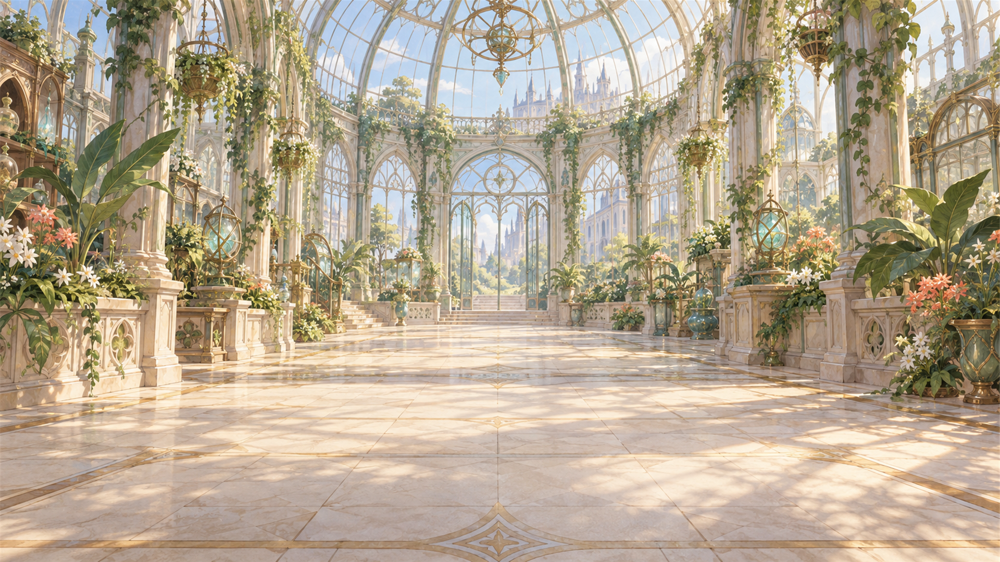
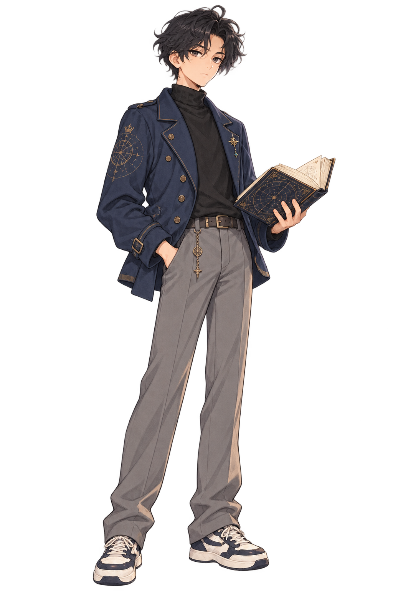

이름은 새 디자인 1안 ‘고전 학술 명조’로 고정하고, 본문은 앞서 만든 자체 서체 3종과 무료 웹폰트 3종으로 비교합니다.


유리꽃을 관찰하고 새로운 길을 살펴봐.오늘의 발견을 마음의 기록에 적어.
서체 카드를 누르면 위 게임 화면의 본문만 바뀝니다. 크기는 1920×1080 화면 기준입니다. 비교 대사는 자체 3종이 지원하는 글자만 사용했습니다.
이름은 1안 레터링 원본의 해당 부분을 표시했습니다. 자체 3종은 198 코드 포인트의 시제품입니다. 기존 캐릭터·배경·폰트 원본은 유지합니다.